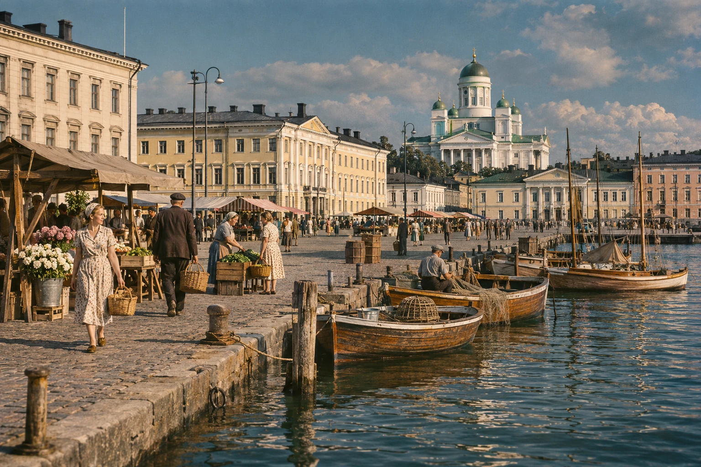

SUOMI · HEINÄKUU 1952
Helsinki,
kesä 1952
Astu laiturille. Merituuli käy torin yli, ja kaupunki odottaa olympiavieraita.
Tekoälyllä tehty historiallinen rekonstruktio
HELSINKI · HEINÄKUU 1952
Tekoälyllä tehty historiallinen rekonstruktio